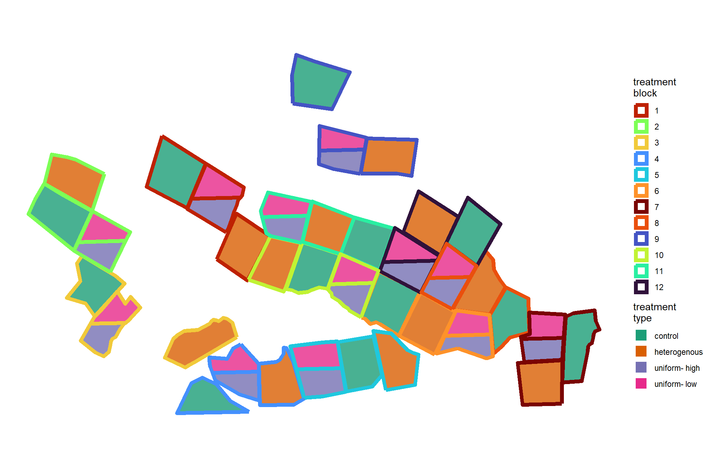
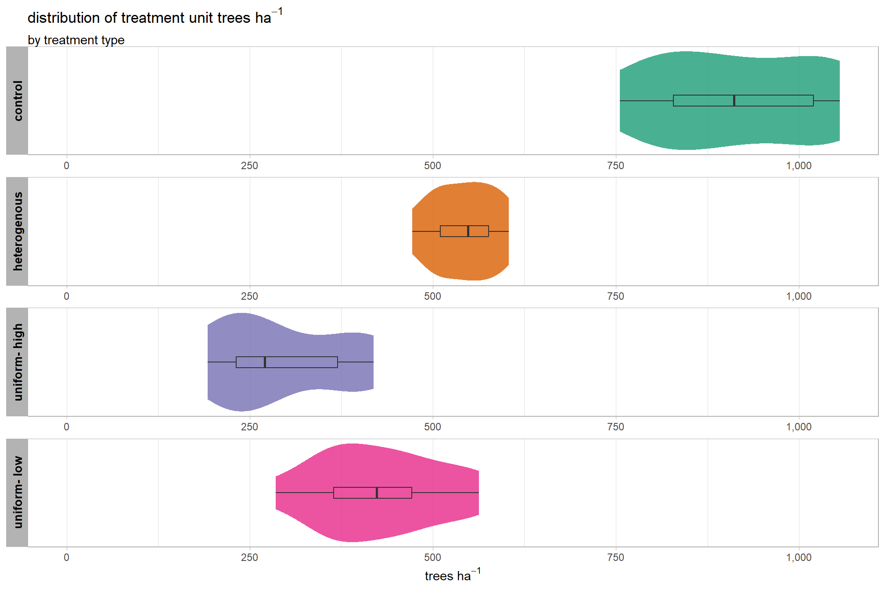
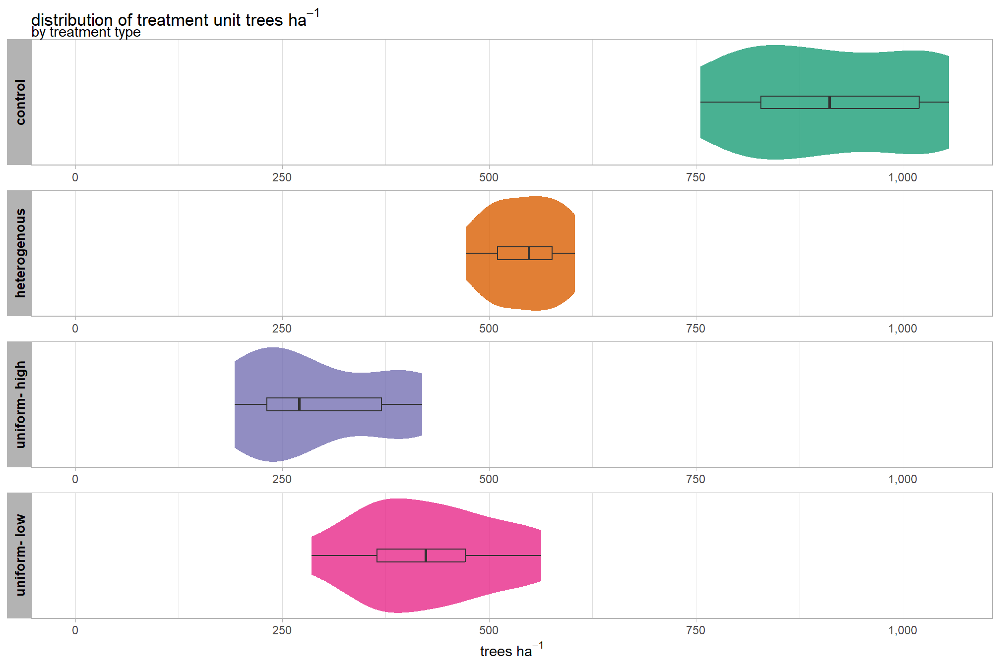
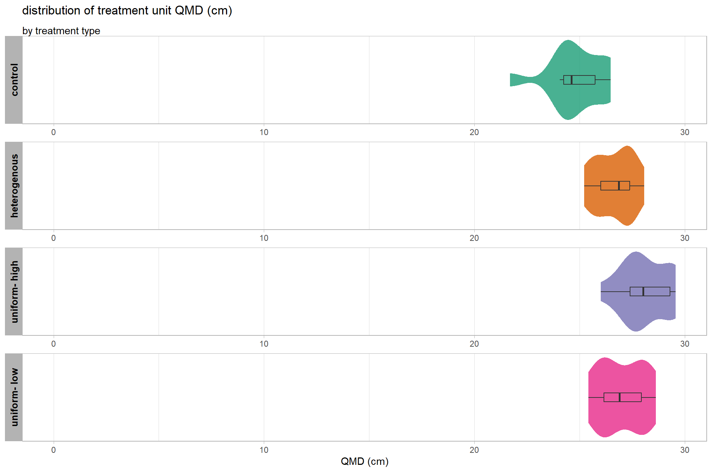
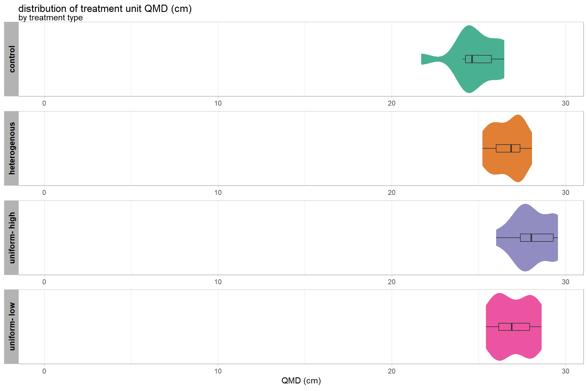
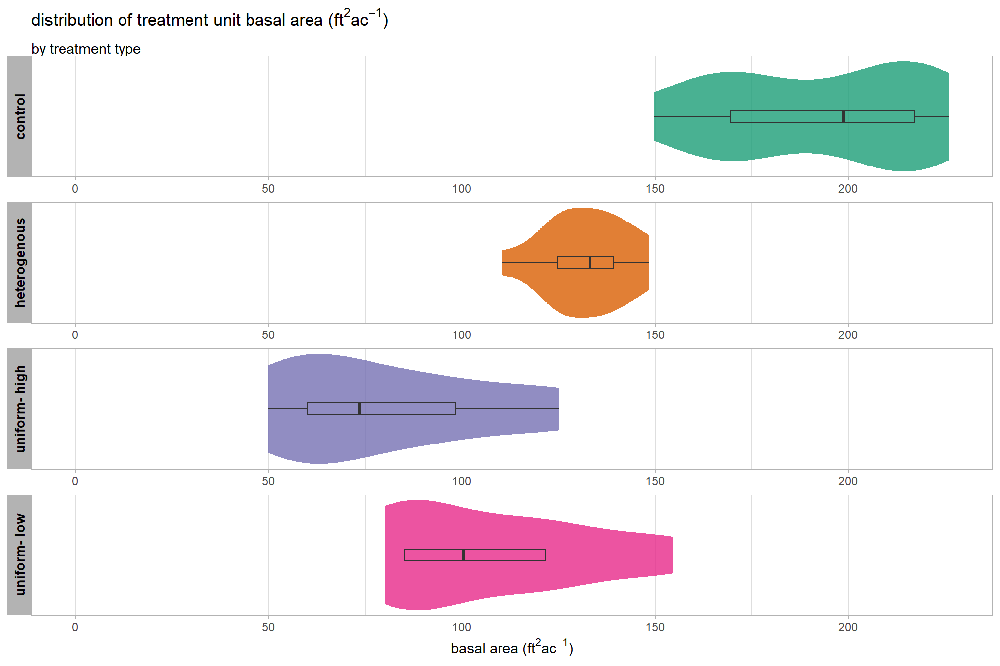

Section 4 Treatment Unit Silvicultural Summary
In this section, we’re going to aggregate the detected trees by treatment unit to produce silvicultural summaries. Before we do that, we’ll use pile predictions as a mask to remove smaller, detected “trees” that are actually piles or downed trees/debris so that we are only working with trees within units.
4.1 Remove Slash Piles
read back in the tree point data and attach to treatment units
treetops_sf <- sf::st_read(dsn = treetops_fnm, quiet = TRUE)
# attach to treatment unit
treetops_sf <- treetops_sf %>%
dplyr::inner_join(
treetops_sf %>%
sf::st_transform(sf::st_crs(stand_boundary)) %>%
sf::st_intersection(
stand_boundary %>%
dplyr::select(unit,block,tretmnt,unit_ha) %>%
dplyr::rename(type = tretmnt) %>%
dplyr::mutate(
type =
tolower(type) %>%
stringr::str_squish()
) %>%
dplyr::rename_with(.fn = ~paste0("trtmnt_", .x, recycle0 = T))
) %>%
sf::st_drop_geometry() %>%
dplyr::select(treeID, tidyselect::starts_with("trtmnt_"))
, by = "treeID"
) %>%
dplyr::mutate(
is_in_trtmnt_unit = ifelse(is.na(trtmnt_type) | trtmnt_type=="control",F,T)
)
# treetops_sf %>% dplyr::glimpse()use our slash pile mask to remove detected “trees” that are likely not trees. if a tree top point falls within the boundary of a detected pile footprint, it will be removed
# save nrow
nrow_temp <- nrow(treetops_sf)
treetops_sf <-
sf::st_filter(
treetops_sf
, piles_workflow_ans %>%
dplyr::filter(is_in_trtmnt_unit, inrange_th_votes>=5) %>%
sf::st_union()
, .predicate = sf::st_disjoint
)what proportion of “trees” were removed?
# nrow_temp
# nrow(treetops_sf)
scales::percent((nrow_temp-nrow(treetops_sf))/nrow_temp, accuracy = 0.1)## [1] "2.7%"nice. now we’ll keep only trees that are at least 2 m in height since we included trees as small as 1.37 m in our tree detection
using our cleaned trees data, how many trees per treatment unit?
treetops_sf %>%
sf::st_drop_geometry() %>%
dplyr::count(trtmnt_type, trtmnt_block, trtmnt_unit,trtmnt_unit_ha) %>%
dplyr::mutate(
trees_per_ha = n/trtmnt_unit_ha
, trtmnt_unit_ha = scales::comma(trtmnt_unit_ha,accuracy=0.1)
, n = scales::comma(n,accuracy=1)
, trees_per_ha = scales::comma(trees_per_ha,accuracy=0.1)
) %>%
kableExtra::kbl(
caption = "count trees by treatment unit"
, col.names = c(
"type","block","unit","ha"
, "# trees", "trees ha<sup>-1</sup>"
)
, escape = F
# , digits = 2
) %>%
kableExtra::kable_styling(font_size = 9.7) %>%
kableExtra::column_spec(seq(4,6,by=2), border_right = TRUE, include_thead = TRUE) %>%
kableExtra::collapse_rows(columns = 1, valign = "top") %>%
kableExtra::scroll_box(height = "8.4in")| type | block | unit | ha | # trees | trees ha-1 |
|---|---|---|---|---|---|
| control | 1 | U11 | 11.5 | 9,614 | 832.4 |
| 2 | U23 | 10.3 | 10,443 | 1,013.1 | |
| 3 | U21 | 8.1 | 8,410 | 1,039.4 | |
| 4 | U4 | 6.7 | 6,417 | 958.8 | |
| 5 | U38 | 8.6 | 7,030 | 817.8 | |
| 6 | U30 | 10.1 | 10,692 | 1,055.2 | |
| 7 | U46 | 8.6 | 7,783 | 910.0 | |
| 8 | U31 | 8.1 | 7,378 | 912.4 | |
| 9 | U54 | 10.3 | 8,839 | 854.1 | |
| 10 | U42 | 8.3 | 6,306 | 755.6 | |
| 11 | U48 | 8.3 | 6,534 | 789.5 | |
| 12 | U34 | 9.2 | 9,752 | 1,055.5 | |
| heterogenous | 1 | U40 | 9.1 | 4,623 | 506.8 |
| 2 | U16 | 9.5 | 5,576 | 586.6 | |
| 3 | U26 | 9.0 | 4,586 | 511.3 | |
| 4 | U36 | 8.5 | 4,014 | 472.0 | |
| 5 | U39 | 8.3 | 4,108 | 494.3 | |
| 6 | U29 | 9.2 | 5,487 | 598.2 | |
| 7 | U44 | 8.6 | 4,792 | 556.9 | |
| 8 | U2 | 8.3 | 4,327 | 522.2 | |
| 9 | U53 | 8.4 | 4,835 | 573.0 | |
| 10 | U41 | 8.2 | 4,475 | 545.7 | |
| 11 | U43 | 8.1 | 4,481 | 550.9 | |
| 12 | U55 | 9.2 | 5,556 | 603.6 | |
| uniform- high | 1 | U10 | 5.2 | 1,877 | 362.7 |
| 2 | U19 | 4.5 | 1,339 | 298.1 | |
| 3 | U18 | 4.1 | 1,072 | 261.0 | |
| 4 | U27 | 4.2 | 1,746 | 419.3 | |
| 5 | U37 | 5.6 | 1,576 | 280.3 | |
| 6 | U28 | 4.3 | 999 | 232.8 | |
| 7 | U45 | 4.3 | 981 | 228.3 | |
| 8 | U33 | 4.5 | 863 | 192.4 | |
| 9 | U52 | 4.1 | 1,606 | 391.6 | |
| 10 | U35 | 4.4 | 1,036 | 233.5 | |
| 11 | U49 | 4.4 | 1,828 | 416.2 | |
| 12 | U32 | 5.1 | 978 | 193.6 | |
| uniform- low | 1 | U10 | 5.2 | 1,888 | 364.8 |
| 2 | U19 | 4.5 | 2,458 | 547.2 | |
| 3 | U18 | 4.1 | 1,521 | 370.4 | |
| 4 | U27 | 4.2 | 1,921 | 461.3 | |
| 5 | U37 | 5.6 | 2,009 | 357.3 | |
| 6 | U28 | 4.3 | 1,784 | 415.7 | |
| 7 | U45 | 4.3 | 1,228 | 285.8 | |
| 8 | U33 | 4.5 | 1,630 | 363.4 | |
| 9 | U52 | 4.1 | 2,056 | 501.4 | |
| 10 | U35 | 4.4 | 2,033 | 458.3 | |
| 11 | U49 | 4.4 | 2,472 | 562.9 | |
| 12 | U32 | 5.1 | 2,176 | 430.8 |
where are these units in space?
ggplot2::ggplot(
data = stand_boundary
, ggplot2::aes(color = ordered(block), fill = ordered(tolower(tretmnt)))
)+
ggplot2::geom_sf(lwd = 2, alpha = 0.8) +
ggplot2::scale_fill_brewer(palette = "Dark2") +
# ggplot2::scale_color_viridis_d(option = "turbo") +
ggplot2::scale_color_manual(
values = viridis::turbo(n = length(unique(stand_boundary$block))) %>% sample()
) +
ggplot2::labs(fill = "treatment\ntype", color = "treatment\nblock") +
ggplot2::theme_void() +
ggplot2::guides(
fill = ggplot2::guide_legend(
override.aes = list(
color = NA, shape = 15, linetype = 0, size = 6, alpha = 1
)
)
, color = ggplot2::guide_legend(
override.aes = list(
fill = NA, shape = 15, size = 6, alpha = 1
)
)
)
4.2 Function to Calculate Silviclutural Metrics
let’s make a function to summarize the data and create common silvicultural metrics within our stand boundary
###################################################################################
# define a function to convert columns in data frame from metric to imperial
# see:
# https://www.forestnb.com/archives/forest-nb-news/resources/conversions/
# https://www.ars.usda.gov/is/np/agbyproducts/agbyappendix.pdf
###################################################################################
calc_imperial_units_fn <- function(df) {
df %>%
# convert to imperial units
dplyr::mutate(
dplyr::across(
.cols = tidyselect::ends_with("_cm")
, ~ .x * 0.394
, .names = "{.col}_in"
)
, dplyr::across(
.cols = tidyselect::ends_with("_m")
, ~ .x * 3.281
, .names = "{.col}_ft"
)
, dplyr::across(
.cols = tidyselect::ends_with("_m2_per_ha")
, ~ .x * 4.359
, .names = "{.col}_ftac"
)
, dplyr::across(
.cols = tidyselect::ends_with("_kg_per_ha")
, ~ .x * 0.892178
, .names = "{.col}_lbsac"
)
, dplyr::across(
.cols = tidyselect::ends_with("_per_ha") &
!tidyselect::ends_with("_m2_per_ha") &
!tidyselect::ends_with("_kg_per_ha")
, ~ .x * 0.405
, .names = "{.col}_ac"
)
, dplyr::across(
.cols = tidyselect::ends_with("_area_ha")
, ~ .x * 2.471
, .names = "{.col}_ac"
)
, dplyr::across(
.cols = tidyselect::ends_with("kg_per_m2")
, ~ .x * 0.20482
, .names = "{.col}_lbsft2"
)
, dplyr::across(
.cols = tidyselect::ends_with("kg_per_m3")
, ~ .x * 0.0624
, .names = "{.col}_lbsft3"
)
, dplyr::across(
.cols = tidyselect::ends_with("_m2") & !tidyselect::ends_with("per_m2")
, ~ .x * 10.764
, .names = "{.col}_ft2"
)
) %>%
dplyr::rename_with(
.fn = function(x){dplyr::case_when(
stringr::str_ends(x,"_cm_in") ~ stringr::str_replace(x,"_cm_in","_in")
, stringr::str_ends(x,"_m_ft") ~ stringr::str_replace(x,"_m_ft","_ft")
, stringr::str_ends(x,"_m2_per_ha_ftac") ~ stringr::str_replace(x,"_m2_per_ha_ftac","_ft2_per_ac")
, stringr::str_ends(x,"_kg_per_ha_lbsac") ~ stringr::str_replace(x,"_kg_per_ha_lbsac","_lbs_per_ac")
, stringr::str_ends(x,"_per_ha_ac") ~ stringr::str_replace(x,"_per_ha_ac","_per_ac")
, stringr::str_ends(x,"_area_ha_ac") ~ stringr::str_replace(x,"_area_ha_ac","_area_ac")
, stringr::str_ends(x,"_kg_per_m2_lbsft2") ~ stringr::str_replace(x,"_kg_per_m2_lbsft2","_lbs_per_ft2")
, stringr::str_ends(x,"_kg_per_m3_lbsft3") ~ stringr::str_replace(x,"_kg_per_m3_lbsft3","_lbs_per_ft3")
, stringr::str_ends(x,"_m2_ft2") ~ stringr::str_replace(x,"_m2_ft2","_ft2")
, TRUE ~ x
)}
)
}
###################################################################################
### stand-level summaries
###################################################################################
calc_silv_metrics <- function(tree_list, stand_area_ha = NULL, study_boundary = NULL, calc_imperial_units = F) {
# get study area
if(!is.null(study_boundary)){
# bounds check
if(
!inherits(study_boundary,"sf")
&& !inherits(study_boundary,"sfc")
){stop("study_boundary must be sf class object")}
if(is.na(sf::st_crs(study_boundary))){stop("study_boundary does not have a CRS")}
if(inherits(study_boundary,"sf") && nrow(study_boundary)!=1){
stop("study_boundary must only have a single record geometry")
}
if(inherits(study_boundary,"sfc") && length(study_boundary)!=1){
stop("study_boundary must only have a single record geometry")
}
if(
!all( sf::st_is(study_boundary, c("POLYGON","MULTIPOLYGON")) )
){
stop("study_boundary must contain POLYGON type geometry only")
}
# area
xxstand_area_ha <- study_boundary %>%
sf::st_area() %>%
as.numeric() %>%
`/`(10000)
}else if(is.numeric(stand_area_ha)){
xxstand_area_ha <- stand_area_ha[1]
}else{
stop("must provide `stand_area_ha` as numeric or `study_boundary` as sf object")
}
if(is.null(xxstand_area_ha) || is.na(xxstand_area_ha) || dplyr::coalesce(xxstand_area_ha,0)<=0){
stop("could not determine valid stand_area_ha")
}
# summarize tree list
if(!inherits(tree_list,"data.frame")){stop("tree_list must be data.frame class object")}
###### !!!!!!!!!!!!!!!!!!!!!!!!!!!!!!!!!!!!!!! NEED TO PUT IN CHECKS FOR COLUMNS USED
# see: cloud2trees::check_df_cols_all_missing()
if( !any(stringr::str_detect(names(tree_list), "landfire_crown_biomass_kg")) ){
tree_list <- tree_list %>% dplyr::mutate(landfire_crown_biomass_kg=as.numeric(NA))
}
if( !any(stringr::str_detect(names(tree_list), "cruz_crown_biomass_kg")) ){
tree_list <- tree_list %>% dplyr::mutate(cruz_crown_biomass_kg=as.numeric(NA))
}
if( !any(stringr::str_detect(names(tree_list), "landfire_tree_kg_per_m3")) ){
tree_list <- tree_list %>% dplyr::mutate(landfire_tree_kg_per_m3=as.numeric(NA))
}
if( !any(stringr::str_detect(names(tree_list), "cruz_tree_kg_per_m3")) ){
tree_list <- tree_list %>% dplyr::mutate(cruz_tree_kg_per_m3=as.numeric(NA))
}
# agg
agg <- tree_list %>%
sf::st_drop_geometry() %>%
dplyr::ungroup() %>%
dplyr::summarise(
n_trees = dplyr::n()
, mean_dbh_cm = mean(dbh_cm, na.rm = T)
, mean_tree_height_m = mean(tree_height_m, na.rm = T)
, mean_tree_cbh_m = mean(tree_cbh_m, na.rm = T)
, loreys_height_m = sum(basal_area_m2*tree_height_m, na.rm = T) / sum(basal_area_m2, na.rm = T)
, basal_area_m2 = sum(basal_area_m2, na.rm = T)
, sum_dbh_cm_sq = sum(dbh_cm^2, na.rm = T)
, landfire_crown_biomass_kg = sum(landfire_crown_biomass_kg, na.rm = F)
, cruz_crown_biomass_kg = sum(cruz_crown_biomass_kg, na.rm = F)
, mean_landfire_tree_kg_per_m3 = mean(landfire_tree_kg_per_m3, na.rm = T)
, mean_cruz_tree_kg_per_m3 = mean(cruz_tree_kg_per_m3, na.rm = T)
) %>%
dplyr::ungroup() %>%
dplyr::mutate(
stand_area_ha = xxstand_area_ha
, trees_per_ha = (n_trees/stand_area_ha)
, basal_area_m2_per_ha = (basal_area_m2/stand_area_ha)
, qmd_cm = sqrt(sum_dbh_cm_sq/n_trees)
, landfire_cfl_kg_per_m2 = landfire_crown_biomass_kg/(stand_area_ha*10000)
, cruz_cfl_kg_per_m2 = cruz_crown_biomass_kg/(stand_area_ha*10000)
) %>%
dplyr::select(-c(sum_dbh_cm_sq,landfire_crown_biomass_kg,cruz_crown_biomass_kg))
# imperial
if(calc_imperial_units){
agg <- calc_imperial_units_fn(agg)
}
return(agg)
}check out the data structure returned by the calc_silv_metrics() function
calc_silv_metrics(
tree_list = treetops_sf %>%
# just get one unit
dplyr::filter(
trtmnt_type==treetops_sf$trtmnt_type[1]
, trtmnt_block==treetops_sf$trtmnt_block[1]
, trtmnt_unit==treetops_sf$trtmnt_unit[1]
)
, stand_area_ha = treetops_sf$trtmnt_unit_ha[1]
, calc_imperial_units = T
) %>%
dplyr::glimpse()## Rows: 1
## Columns: 27
## $ n_trees <int> 10443
## $ mean_dbh_cm <dbl> 24.03183
## $ mean_tree_height_m <dbl> 4.395676
## $ mean_tree_cbh_m <dbl> 2.120214
## $ loreys_height_m <dbl> 5.319859
## $ basal_area_m2 <dbl> 534.4338
## $ mean_landfire_tree_kg_per_m3 <dbl> 0.6795806
## $ mean_cruz_tree_kg_per_m3 <dbl> 1.15825
## $ stand_area_ha <dbl> 10.30788
## $ trees_per_ha <dbl> 1013.108
## $ basal_area_m2_per_ha <dbl> 51.8471
## $ qmd_cm <dbl> 25.52639
## $ landfire_cfl_kg_per_m2 <dbl> 0.4942284
## $ cruz_cfl_kg_per_m2 <dbl> NA
## $ mean_dbh_in <dbl> 9.468542
## $ qmd_in <dbl> 10.0574
## $ mean_tree_height_ft <dbl> 14.42221
## $ mean_tree_cbh_ft <dbl> 6.956424
## $ loreys_height_ft <dbl> 17.45446
## $ basal_area_ft2_per_ac <dbl> 226.0015
## $ trees_per_ac <dbl> 410.3088
## $ stand_area_ac <dbl> 25.47078
## $ landfire_cfl_lbs_per_ft2 <dbl> 0.1012279
## $ cruz_cfl_lbs_per_ft2 <dbl> NA
## $ mean_landfire_tree_lbs_per_ft3 <dbl> 0.04240583
## $ mean_cruz_tree_lbs_per_ft3 <dbl> 0.07227478
## $ basal_area_ft2 <dbl> 5752.6454.3 Treatment Unit Summaries
let’s summarize the tree data by treatment unit
unit_sum_df <-
treetops_sf %>%
sf::st_drop_geometry() %>%
dplyr::distinct(trtmnt_type,trtmnt_block,trtmnt_unit,trtmnt_unit_ha)
unit_sum_df <-
1:nrow(unit_sum_df) %>%
purrr::map(function(x){
unit_temp <- unit_sum_df %>% dplyr::slice(x)
unit_temp %>%
dplyr::bind_cols(
calc_silv_metrics(
tree_list = treetops_sf %>%
# just get one unit
dplyr::inner_join(
unit_temp
, by = dplyr::join_by(trtmnt_type,trtmnt_block,trtmnt_unit)
)
, stand_area_ha = unit_temp$trtmnt_unit_ha
, calc_imperial_units = T
)
)
}) %>%
dplyr::bind_rows() %>%
dplyr::mutate(
dplyr::across(c(trtmnt_type,trtmnt_block,trtmnt_unit),ordered)
, my_fct = forcats::fct_cross(trtmnt_type,trtmnt_block,trtmnt_unit)
) %>%
dplyr::arrange(desc(trtmnt_type),trees_per_ha) %>%
dplyr::mutate(my_fct = forcats::fct_inorder(my_fct))
# unit_sum_df %>% dplyr::glimpse()4.3.1 Tabular
4.3.1.1 Metric units
unit_sum_df %>%
dplyr::arrange(trtmnt_type, trtmnt_block, trtmnt_unit) %>%
dplyr::select(
trtmnt_type, trtmnt_block, trtmnt_unit
, stand_area_ha
# different
, n_trees
, trees_per_ha
, mean_tree_height_m
, loreys_height_m
, mean_dbh_cm
, qmd_cm
, basal_area_m2_per_ha
, mean_landfire_tree_kg_per_m3
, mean_cruz_tree_kg_per_m3
) %>%
dplyr::mutate(
dplyr::across(c(n_trees), ~scales::comma(.x,accuracy=1))
, dplyr::across(
-c(tidyselect::starts_with("trtmnt_"),n_trees,tidyselect::ends_with("3"))
, ~scales::comma(.x,accuracy=0.1)
)
, dplyr::across(
tidyselect::ends_with("3")
, ~scales::comma(.x,accuracy=0.001)
)
) %>%
kableExtra::kbl(
caption = "Stand summary metrics in metric units"
, col.names = c(
"type","block","unit","ha"
, "trees"
, "trees ha<sup>-1</sup>"
, "mean<br>tree ht. (m)"
, "Lorey's<br>tree ht. (m)"
, "mean<br>DBH (cm)"
, "QMD (cm)"
, "BA (m<sup>2</sup> ha<sup>-1</sup>)"
, "mean<br>CBD (kg m<sup>-3</sup>)<br>LANDFIRE"
, "mean<br>CBD (kg m<sup>-3</sup>)<br>Cruz"
)
, escape = F
) %>%
kableExtra::kable_styling(font_size = 9.7) %>%
# kableExtra::column_spec(seq(4,10,by=2), border_right = TRUE, include_thead = TRUE) %>%
kableExtra::collapse_rows(columns = 1, valign = "top") %>%
kableExtra::scroll_box(height = "8.4in")| type | block | unit | ha | trees | trees ha-1 |
mean tree ht. (m) |
Lorey’s tree ht. (m) |
mean DBH (cm) |
QMD (cm) | BA (m2 ha-1) |
mean CBD (kg m-3) LANDFIRE |
mean CBD (kg m-3) Cruz |
|---|---|---|---|---|---|---|---|---|---|---|---|---|
| control | 1 | U11 | 11.5 | 9,614 | 832.4 | 4.2 | 4.9 | 23.0 | 24.2 | 38.4 | 0.664 | NA |
| 2 | U23 | 10.3 | 10,443 | 1,013.1 | 4.4 | 5.3 | 24.0 | 25.5 | 51.8 | 0.680 | 1.158 | |
| 3 | U21 | 8.1 | 8,410 | 1,039.4 | 4.2 | 4.9 | 23.5 | 24.7 | 49.9 | 0.508 | 0.982 | |
| 4 | U4 | 6.7 | 6,417 | 958.8 | 4.2 | 5.1 | 22.7 | 24.3 | 44.3 | 0.642 | 1.044 | |
| 5 | U38 | 8.6 | 7,030 | 817.8 | 4.2 | 5.0 | 23.3 | 24.5 | 38.6 | 0.423 | 0.626 | |
| 6 | U30 | 10.1 | 10,692 | 1,055.2 | 4.2 | 4.8 | 23.2 | 24.3 | 48.9 | 0.508 | NA | |
| 7 | U46 | 8.6 | 7,783 | 910.0 | 4.6 | 5.5 | 25.1 | 26.5 | 50.1 | 0.560 | NA | |
| 8 | U31 | 8.1 | 7,378 | 912.4 | 4.6 | 5.4 | 25.1 | 26.4 | 49.8 | 0.562 | NA | |
| 9 | U54 | 10.3 | 8,839 | 854.1 | 4.5 | 5.3 | 25.2 | 26.4 | 46.8 | 0.681 | NA | |
| 10 | U42 | 8.3 | 6,306 | 755.6 | 4.1 | 5.0 | 22.6 | 24.1 | 34.3 | 0.663 | NA | |
| 11 | U48 | 8.3 | 6,534 | 789.5 | 4.3 | 5.2 | 23.8 | 25.3 | 39.6 | 0.713 | NA | |
| 12 | U34 | 9.2 | 9,752 | 1,055.5 | 3.8 | 4.4 | 20.6 | 21.7 | 39.0 | 0.664 | NA | |
| heterogenous | 1 | U40 | 9.1 | 4,623 | 506.8 | 4.6 | 5.3 | 25.3 | 26.6 | 28.1 | 0.921 | NA |
| 2 | U16 | 9.5 | 5,576 | 586.6 | 4.7 | 5.5 | 25.9 | 27.2 | 34.0 | 0.981 | 1.054 | |
| 3 | U26 | 9.0 | 4,586 | 511.3 | 4.8 | 5.7 | 25.9 | 27.4 | 30.1 | 0.859 | 0.906 | |
| 4 | U36 | 8.5 | 4,014 | 472.0 | 4.5 | 5.3 | 24.9 | 26.1 | 25.3 | 0.764 | 0.787 | |
| 5 | U39 | 8.3 | 4,108 | 494.3 | 4.7 | 5.4 | 26.4 | 27.4 | 29.1 | 0.850 | 0.909 | |
| 6 | U29 | 9.2 | 5,487 | 598.2 | 4.5 | 5.1 | 25.1 | 26.1 | 32.1 | 0.777 | NA | |
| 7 | U44 | 8.6 | 4,792 | 556.9 | 4.4 | 5.0 | 24.5 | 25.6 | 28.6 | 0.965 | NA | |
| 8 | U2 | 8.3 | 4,327 | 522.2 | 4.8 | 5.5 | 26.4 | 27.5 | 30.9 | 0.964 | NA | |
| 9 | U53 | 8.4 | 4,835 | 573.0 | 4.3 | 5.0 | 24.1 | 25.2 | 28.6 | 1.015 | NA | |
| 10 | U41 | 8.2 | 4,475 | 545.7 | 4.9 | 5.6 | 26.9 | 28.1 | 33.8 | 0.874 | 0.699 | |
| 11 | U43 | 8.1 | 4,481 | 550.9 | 4.7 | 5.4 | 26.0 | 27.2 | 31.9 | 0.972 | NA | |
| 12 | U55 | 9.2 | 5,556 | 603.6 | 4.4 | 5.0 | 24.6 | 25.6 | 31.2 | 0.936 | NA | |
| uniform- high | 1 | U10 | 5.2 | 1,877 | 362.7 | 4.9 | 5.4 | 27.1 | 28.1 | 22.4 | 1.104 | NA |
| 2 | U19 | 4.5 | 1,339 | 298.1 | 4.9 | 5.6 | 26.7 | 28.0 | 18.4 | 0.990 | 1.166 | |
| 3 | U18 | 4.1 | 1,072 | 261.0 | 4.5 | 5.4 | 24.5 | 26.0 | 13.9 | 0.973 | 1.010 | |
| 4 | U27 | 4.2 | 1,746 | 419.3 | 5.2 | 5.8 | 28.6 | 29.5 | 28.7 | 1.166 | 1.072 | |
| 5 | U37 | 5.6 | 1,576 | 280.3 | 5.2 | 6.0 | 28.2 | 29.4 | 19.0 | 1.022 | 0.838 | |
| 6 | U28 | 4.3 | 999 | 232.8 | 4.9 | 5.5 | 27.1 | 28.1 | 14.5 | 1.046 | NA | |
| 7 | U45 | 4.3 | 981 | 228.3 | 5.1 | 5.8 | 28.2 | 29.3 | 15.4 | 0.955 | NA | |
| 8 | U33 | 4.5 | 863 | 192.4 | 4.8 | 5.3 | 26.8 | 27.6 | 11.5 | 1.076 | NA | |
| 9 | U52 | 4.1 | 1,606 | 391.6 | 4.7 | 5.2 | 26.4 | 27.3 | 22.9 | 1.238 | 1.123 | |
| 10 | U35 | 4.4 | 1,036 | 233.5 | 4.7 | 5.2 | 26.2 | 27.1 | 13.5 | 1.009 | 1.184 | |
| 11 | U49 | 4.4 | 1,828 | 416.2 | 5.2 | 5.7 | 28.7 | 29.6 | 28.6 | 1.179 | NA | |
| 12 | U32 | 5.1 | 978 | 193.6 | 4.7 | 5.4 | 26.4 | 27.4 | 11.4 | 1.090 | NA | |
| uniform- low | 1 | U10 | 5.2 | 1,888 | 364.8 | 4.4 | 5.0 | 24.8 | 25.8 | 19.1 | 1.011 | 0.973 |
| 2 | U19 | 4.5 | 2,458 | 547.2 | 4.9 | 5.6 | 26.9 | 28.1 | 33.9 | 1.105 | 1.330 | |
| 3 | U18 | 4.1 | 1,521 | 370.4 | 4.5 | 5.1 | 24.9 | 26.0 | 19.6 | 1.129 | 0.924 | |
| 4 | U27 | 4.2 | 1,921 | 461.3 | 4.8 | 5.5 | 26.8 | 27.9 | 28.2 | 1.089 | 1.100 | |
| 5 | U37 | 5.6 | 2,009 | 357.3 | 4.5 | 5.0 | 25.3 | 26.2 | 19.3 | 0.957 | 0.534 | |
| 6 | U28 | 4.3 | 1,784 | 415.7 | 4.7 | 5.3 | 26.2 | 27.2 | 24.2 | 1.118 | NA | |
| 7 | U45 | 4.3 | 1,228 | 285.8 | 5.0 | 5.7 | 27.6 | 28.6 | 18.4 | 1.110 | NA | |
| 8 | U33 | 4.5 | 1,630 | 363.4 | 4.5 | 5.1 | 25.5 | 26.4 | 19.9 | 1.057 | NA | |
| 9 | U52 | 4.1 | 2,056 | 501.4 | 4.6 | 5.1 | 25.7 | 26.6 | 27.8 | 1.282 | NA | |
| 10 | U35 | 4.4 | 2,033 | 458.3 | 4.8 | 5.5 | 26.6 | 27.8 | 27.8 | 1.021 | 1.392 | |
| 11 | U49 | 4.4 | 2,472 | 562.9 | 4.9 | 5.6 | 27.3 | 28.3 | 35.4 | 1.043 | NA | |
| 12 | U32 | 5.1 | 2,176 | 430.8 | 4.4 | 5.0 | 24.4 | 25.4 | 21.9 | 1.022 | NA |
4.3.1.2 Imperial units
unit_sum_df %>%
dplyr::arrange(trtmnt_type, trtmnt_block, trtmnt_unit) %>%
dplyr::select(
trtmnt_type, trtmnt_block, trtmnt_unit
, stand_area_ac
# different
, n_trees
, trees_per_ac
, mean_tree_height_ft
, loreys_height_ft
, mean_dbh_in
, qmd_in
, basal_area_ft2_per_ac
, mean_landfire_tree_lbs_per_ft3
, mean_cruz_tree_lbs_per_ft3
) %>%
dplyr::mutate(
dplyr::across(c(n_trees), ~scales::comma(.x,accuracy=1))
, dplyr::across(
-c(n_trees,tidyselect::starts_with("trtmnt_"),tidyselect::ends_with("3"))
, ~scales::comma(.x,accuracy=0.1)
)
, dplyr::across(
tidyselect::ends_with("3")
, ~scales::comma(.x,accuracy=0.001)
)
) %>%
kableExtra::kbl(
caption = "Stand summary metrics in imperial units"
, col.names = c(
"type","block","unit","ac"
, "trees"
, "trees ac<sup>-1</sup>"
, "mean<br>tree ht. (ft)"
, "Lorey's<br>tree ht. (ft)"
, "mean<br>DBH (in)"
, "QMD (in)"
, "BA (ft<sup>2</sup> ac<sup>-1</sup>)"
, "mean<br>CBD (lb ft<sup>-3</sup>)<br>LANDFIRE"
, "mean<br>CBD (lb ft<sup>-3</sup>)<br>Cruz"
)
, escape = F
) %>%
kableExtra::kable_styling(font_size = 9.7) %>%
# kableExtra::column_spec(seq(4,10,by=2), border_right = TRUE, include_thead = TRUE) %>%
kableExtra::collapse_rows(columns = 1, valign = "top") %>%
kableExtra::scroll_box(height = "8.4in")| type | block | unit | ac | trees | trees ac-1 |
mean tree ht. (ft) |
Lorey’s tree ht. (ft) |
mean DBH (in) |
QMD (in) | BA (ft2 ac-1) |
mean CBD (lb ft-3) LANDFIRE |
mean CBD (lb ft-3) Cruz |
|---|---|---|---|---|---|---|---|---|---|---|---|---|
| control | 1 | U11 | 28.5 | 9,614 | 337.1 | 13.6 | 16.1 | 9.0 | 9.5 | 167.3 | 0.041 | NA |
| 2 | U23 | 25.5 | 10,443 | 410.3 | 14.4 | 17.5 | 9.5 | 10.1 | 226.0 | 0.042 | 0.072 | |
| 3 | U21 | 20.0 | 8,410 | 420.9 | 13.9 | 16.2 | 9.3 | 9.7 | 217.4 | 0.032 | 0.061 | |
| 4 | U4 | 16.5 | 6,417 | 388.3 | 13.6 | 16.8 | 8.9 | 9.6 | 193.1 | 0.040 | 0.065 | |
| 5 | U38 | 21.2 | 7,030 | 331.2 | 13.8 | 16.3 | 9.2 | 9.7 | 168.4 | 0.026 | 0.039 | |
| 6 | U30 | 25.0 | 10,692 | 427.4 | 13.7 | 15.8 | 9.1 | 9.6 | 213.1 | 0.032 | NA | |
| 7 | U46 | 21.1 | 7,783 | 368.5 | 15.0 | 17.9 | 9.9 | 10.4 | 218.5 | 0.035 | NA | |
| 8 | U31 | 20.0 | 7,378 | 369.5 | 15.0 | 17.7 | 9.9 | 10.4 | 217.1 | 0.035 | NA | |
| 9 | U54 | 25.6 | 8,839 | 345.9 | 14.9 | 17.3 | 9.9 | 10.4 | 204.2 | 0.042 | NA | |
| 10 | U42 | 20.6 | 6,306 | 306.0 | 13.5 | 16.3 | 8.9 | 9.5 | 149.7 | 0.041 | NA | |
| 11 | U48 | 20.5 | 6,534 | 319.7 | 14.2 | 17.1 | 9.4 | 10.0 | 172.8 | 0.045 | NA | |
| 12 | U34 | 22.8 | 9,752 | 427.5 | 12.3 | 14.4 | 8.1 | 8.5 | 170.0 | 0.041 | NA | |
| heterogenous | 1 | U40 | 22.5 | 4,623 | 205.3 | 15.0 | 17.5 | 10.0 | 10.5 | 122.6 | 0.058 | NA |
| 2 | U16 | 23.5 | 5,576 | 237.6 | 15.5 | 18.2 | 10.2 | 10.7 | 148.4 | 0.061 | 0.066 | |
| 3 | U26 | 22.2 | 4,586 | 207.1 | 15.6 | 18.7 | 10.2 | 10.8 | 131.3 | 0.054 | 0.057 | |
| 4 | U36 | 21.0 | 4,014 | 191.1 | 14.8 | 17.4 | 9.8 | 10.3 | 110.4 | 0.048 | 0.049 | |
| 5 | U39 | 20.5 | 4,108 | 200.2 | 15.5 | 17.6 | 10.4 | 10.8 | 127.0 | 0.053 | 0.057 | |
| 6 | U29 | 22.7 | 5,487 | 242.3 | 14.7 | 16.8 | 9.9 | 10.3 | 139.8 | 0.048 | NA | |
| 7 | U44 | 21.3 | 4,792 | 225.5 | 14.4 | 16.4 | 9.7 | 10.1 | 124.8 | 0.060 | NA | |
| 8 | U2 | 20.5 | 4,327 | 211.5 | 15.6 | 17.9 | 10.4 | 10.8 | 134.8 | 0.060 | NA | |
| 9 | U53 | 20.9 | 4,835 | 232.1 | 14.2 | 16.4 | 9.5 | 9.9 | 124.9 | 0.063 | NA | |
| 10 | U41 | 20.3 | 4,475 | 221.0 | 16.0 | 18.3 | 10.6 | 11.1 | 147.3 | 0.055 | 0.044 | |
| 11 | U43 | 20.1 | 4,481 | 223.1 | 15.4 | 17.7 | 10.2 | 10.7 | 139.1 | 0.061 | NA | |
| 12 | U55 | 22.7 | 5,556 | 244.4 | 14.4 | 16.4 | 9.7 | 10.1 | 135.8 | 0.058 | NA | |
| uniform- high | 1 | U10 | 12.8 | 1,877 | 146.9 | 15.9 | 17.8 | 10.7 | 11.1 | 97.7 | 0.069 | NA |
| 2 | U19 | 11.1 | 1,339 | 120.7 | 15.9 | 18.5 | 10.5 | 11.0 | 80.0 | 0.062 | 0.073 | |
| 3 | U18 | 10.1 | 1,072 | 105.7 | 14.7 | 17.9 | 9.6 | 10.3 | 60.5 | 0.061 | 0.063 | |
| 4 | U27 | 10.3 | 1,746 | 169.8 | 17.0 | 19.1 | 11.3 | 11.6 | 125.2 | 0.073 | 0.067 | |
| 5 | U37 | 13.9 | 1,576 | 113.5 | 17.1 | 19.7 | 11.1 | 11.6 | 82.7 | 0.064 | 0.052 | |
| 6 | U28 | 10.6 | 999 | 94.3 | 16.0 | 18.1 | 10.7 | 11.1 | 63.1 | 0.065 | NA | |
| 7 | U45 | 10.6 | 981 | 92.5 | 16.8 | 19.0 | 11.1 | 11.5 | 67.0 | 0.060 | NA | |
| 8 | U33 | 11.1 | 863 | 77.9 | 15.6 | 17.2 | 10.5 | 10.9 | 50.1 | 0.067 | NA | |
| 9 | U52 | 10.1 | 1,606 | 158.6 | 15.4 | 17.2 | 10.4 | 10.8 | 100.0 | 0.077 | 0.070 | |
| 10 | U35 | 11.0 | 1,036 | 94.6 | 15.3 | 17.1 | 10.3 | 10.7 | 58.8 | 0.063 | 0.074 | |
| 11 | U49 | 10.9 | 1,828 | 168.6 | 17.0 | 18.9 | 11.3 | 11.6 | 124.6 | 0.074 | NA | |
| 12 | U32 | 12.5 | 978 | 78.4 | 15.5 | 17.6 | 10.4 | 10.8 | 49.9 | 0.068 | NA | |
| uniform- low | 1 | U10 | 12.8 | 1,888 | 147.8 | 14.5 | 16.4 | 9.8 | 10.2 | 83.2 | 0.063 | 0.061 |
| 2 | U19 | 11.1 | 2,458 | 221.6 | 16.0 | 18.3 | 10.6 | 11.1 | 147.7 | 0.069 | 0.083 | |
| 3 | U18 | 10.1 | 1,521 | 150.0 | 14.6 | 16.7 | 9.8 | 10.2 | 85.5 | 0.070 | 0.058 | |
| 4 | U27 | 10.3 | 1,921 | 186.8 | 15.9 | 18.2 | 10.6 | 11.0 | 122.8 | 0.068 | 0.069 | |
| 5 | U37 | 13.9 | 2,009 | 144.7 | 14.7 | 16.4 | 10.0 | 10.3 | 84.1 | 0.060 | 0.033 | |
| 6 | U28 | 10.6 | 1,784 | 168.4 | 15.4 | 17.4 | 10.3 | 10.7 | 105.4 | 0.070 | NA | |
| 7 | U45 | 10.6 | 1,228 | 115.8 | 16.5 | 18.7 | 10.9 | 11.3 | 80.2 | 0.069 | NA | |
| 8 | U33 | 11.1 | 1,630 | 147.2 | 14.9 | 16.6 | 10.1 | 10.4 | 86.9 | 0.066 | NA | |
| 9 | U52 | 10.1 | 2,056 | 203.1 | 15.0 | 16.7 | 10.1 | 10.5 | 121.3 | 0.080 | NA | |
| 10 | U35 | 11.0 | 2,033 | 185.6 | 15.8 | 18.1 | 10.5 | 10.9 | 121.1 | 0.064 | 0.087 | |
| 11 | U49 | 10.9 | 2,472 | 228.0 | 16.2 | 18.5 | 10.7 | 11.2 | 154.5 | 0.065 | NA | |
| 12 | U32 | 12.5 | 2,176 | 174.5 | 14.3 | 16.2 | 9.6 | 10.0 | 95.3 | 0.064 | NA |
4.3.2 Visual
we’ll start with a simple bar plot to see if the aggregated trees per ha generally align with the treatment types
unit_sum_df %>%
ggplot2::ggplot(mapping = ggplot2::aes(x=trees_per_ha,y=my_fct,fill=trtmnt_type,group = trtmnt_type)) +
ggplot2::geom_col() +
ggplot2::scale_fill_brewer(palette = "Dark2") +
ggplot2::scale_x_continuous(labels = scales::comma) +
ggplot2::theme_light() +
ggplot2::labs(x = "trees per ha", y = "") +
ggplot2::theme(
legend.position = "none"
, axis.text.y = ggplot2::element_text(size = 7)
, axis.text.x = ggplot2::element_text(size = 8)
)
that’s looks about right, let’s check out a unit-level distribution of the TPH
# reusable function for plotting
plt_metric_dist_fn <- function(df, metric_name, metric_label = NA) {
if(any(is.na(metric_label))){metric_label <- metric_name}
tit <- paste(
"distribution of treatment unit"
,metric_label
) %>%
latex2exp::TeX()
df %>%
ggplot2::ggplot(mapping = ggplot2::aes(x=.data[[metric_name]],fill=trtmnt_type)) +
ggplot2::geom_density(mapping = ggplot2::aes(y=ggplot2::after_stat(scaled)), alpha = 0.8, color = NA) +
ggplot2::facet_grid(
rows = dplyr::vars(trtmnt_type)
, axes = "all"
, switch = "y"
) +
ggplot2::scale_fill_brewer(palette = "Dark2") +
ggplot2::scale_x_continuous(limits=c(0,NA),labels = scales::comma) +
ggplot2::scale_y_continuous(NULL,breaks=NULL) +
ggplot2::labs(
fill="",x=latex2exp::TeX(metric_label),y=""
, title = tit
, subtitle = "\nby treatment type"
) +
ggplot2::theme_light() +
ggplot2::theme(
legend.position = "none"
, strip.text = ggplot2::element_text(size = 10, color = "black", face = "bold")
, axis.text.x = ggplot2::element_text(size = 9)
, plot.subtitle = ggplot2::element_text(margin = margin(t = -10, unit = "pt"))
)
}
plt_metric_violin_fn <- function(df, metric_name, metric_label = NA) {
if(any(is.na(metric_label))){metric_label <- metric_name}
tit <- paste(
"distribution of treatment unit"
,metric_label
) %>%
latex2exp::TeX()
df %>%
ggplot2::ggplot(mapping = ggplot2::aes(x=.data[[metric_name]])) +
ggplot2::geom_violin(
mapping = ggplot2::aes(y = 0, fill=trtmnt_type)
, alpha = 0.8, color = NA
) +
ggplot2::geom_boxplot(width = 0.1, fill = NA, outliers = F) +
ggplot2::facet_grid(
rows = dplyr::vars(trtmnt_type)
, axes = "all"
, switch = "y"
) +
ggplot2::scale_fill_brewer(palette = "Dark2") +
ggplot2::scale_x_continuous(limits=c(0,NA),labels = scales::comma) +
ggplot2::scale_y_continuous(NULL,breaks=NULL) +
ggplot2::labs(
fill="",x=latex2exp::TeX(metric_label),y=""
, title = tit
, subtitle = "\nby treatment type"
) +
ggplot2::theme_light() +
ggplot2::theme(
legend.position = "none"
, strip.text = ggplot2::element_text(size = 10, color = "black", face = "bold")
, axis.text.x = ggplot2::element_text(size = 9)
, plot.subtitle = ggplot2::element_text(margin = margin(t = -10, unit = "pt"))
)
}
# plot it
plt_metric_violin_fn(unit_sum_df,"trees_per_ha",metric_label = "trees $ha^{-1}$")
since we also have imperial units let’s see TPA

we can also look at the QMD in cm

and QMD in inches

and basal area in square meters per hectare
plt_metric_violin_fn(unit_sum_df,"basal_area_m2_per_ha",metric_label = "basal area ($m^{2} ha^{-1}$)")but also basal area in square feet per acre
plt_metric_violin_fn(unit_sum_df,"basal_area_ft2_per_ac",metric_label = "basal area ($ft^{2} ac^{-1}$)")